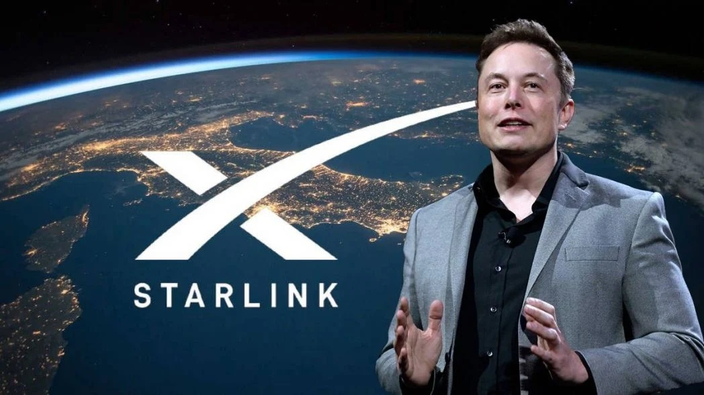
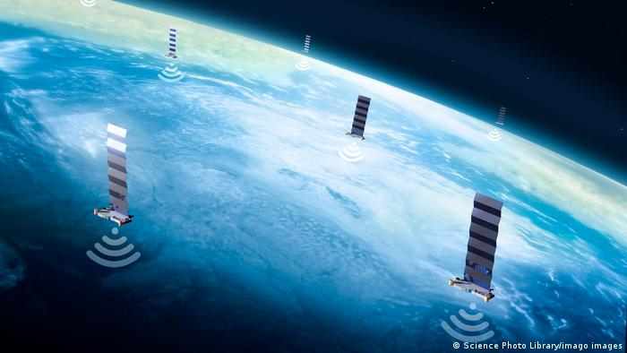

Enterate de las ultimas novedades
Elon Musk conectara al mundo entero con star link
Starlink ofrece servicio de alta velocidad y baja latencia a través de todo el mundo. Dentro de cada área de cobertura, los pedidos son completados por orden de cobertura.

Con altas velocidades y latencia de tan solo 20 ms en la mayoría de las horas, Starlink permite videollamadas, juegos en línea, transmisión y otras actividades de alta velocidad de datos que históricamente no han sido posibles con Internet por satélite. Los usuarios también tienen la opción de llevar Starlink con ellos a través de la función Portabilidad o el servicio Starlink para RV.